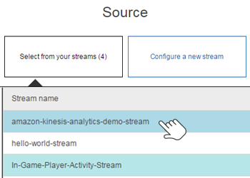
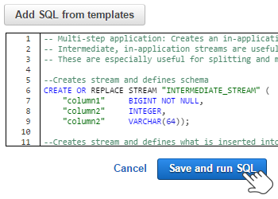
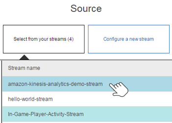
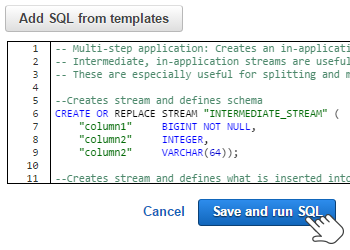

SAA#108
お疲れ様でした！SAA#108のクイズ終了しました。
解答スコアは %%SCORE%% / %%TOTAL%% 問正解です。
%%RATING%%
あなたの選択した答えは強調表示されています。
問題1 |
デフォルト設定の同じ VPC の異なるサブネットにある 2 つの Amazon EC2 インスタンスのサーバ1 とサーバ2 を実行しています。サーバ1 はサーバ2 に ping を実行できますが、サーバ2 はサーバ1 に ping を実行できません。 原因について選択してください。（2 つの回答を選択）
2 つのサーバーが同じアベイラビリティーゾーンに配置されていない。 | |
ルートテーブルに定義されているサーバ2 からサーバ1 までのルートがない。 | |
サーバ1 のセキュリティグループのインバウンドで ICMP トラフィックが許可されていない。 | |
サーバ1 のオペレーティングシステムのファイアウォールがサーバ2 からのトラフィックをブロックしている。 | |
サーバ2 のセキュリティグループのインバウンドで ICMP トラフィックが許可されていない。 |
問題 1 の説明および補足
セキュリティグループはステートフルで、インバウンドトラフィックとアウトバウンドトラフィックのルールを個別に指定できます。サーバ1 からサーバ2 へのpingは問題なく疎通できていますが、サーバ2 →サーバ1 での問題がある状態です。この場合は、サーバ1 側のセキュリティーグループの設定に注目します。
・サーバ1 のオペレーティングシステムのファイアウォールがサーバ2 からのトラフィックをブロックしている。
→サーバ1 側のインバウンドトラフィックを許可する必要があるため、サーバ1 のオペレーティングシステムのファイアウォールを許可します。
・サーバ1 のセキュリティグループのインバウンドで ICMP トラフィックが許可されていない。
→サーバ1 セキュリティグループのインバウンドでICMP トラフィックを許可することで行きと戻りの通信経路を確保できます。
■以下間違いです。
・2 つのサーバーが同じアベイラビリティーゾーンに配置されていない。
→設定次第でアベイラビリティーゾーン間の通信はできるので間違いです。
・サーバ2 のセキュリティグループのインバウンドで ICMP トラフィックが許可されない。
→セキュリティグループはステートフルです。インスタンスからリクエストを送信する場合、そのリクエストのレスポンストラフィックは、インバウンドセキュリティグループルールにかかわらず、流れることができます。許可されたインバウンドトラフィックに対する応答（戻りのトラフィック）は、アウトバウンドルールにかかわらずアウト側に対し通過することができるため、間違いです。
・ルートテーブルに定義されている サーバ2 から サーバ1 までのルートはありません。
→同一 VPC 内ではサブネット間の通信が特に設定などをしなくてもデフォルトで可能です。問題文にデフォルトと記載されていることを確認してください。
参考URL:セキュリティとフィルタリング
・サーバ1 のオペレーティングシステムのファイアウォールがサーバ2 からのトラフィックをブロックしている。
→サーバ1 側のインバウンドトラフィックを許可する必要があるため、サーバ1 のオペレーティングシステムのファイアウォールを許可します。
・サーバ1 のセキュリティグループのインバウンドで ICMP トラフィックが許可されていない。
→サーバ1 セキュリティグループのインバウンドでICMP トラフィックを許可することで行きと戻りの通信経路を確保できます。
■以下間違いです。
・2 つのサーバーが同じアベイラビリティーゾーンに配置されていない。
→設定次第でアベイラビリティーゾーン間の通信はできるので間違いです。
・サーバ2 のセキュリティグループのインバウンドで ICMP トラフィックが許可されない。
→セキュリティグループはステートフルです。インスタンスからリクエストを送信する場合、そのリクエストのレスポンストラフィックは、インバウンドセキュリティグループルールにかかわらず、流れることができます。許可されたインバウンドトラフィックに対する応答（戻りのトラフィック）は、アウトバウンドルールにかかわらずアウト側に対し通過することができるため、間違いです。
・ルートテーブルに定義されている サーバ2 から サーバ1 までのルートはありません。
→同一 VPC 内ではサブネット間の通信が特に設定などをしなくてもデフォルトで可能です。問題文にデフォルトと記載されていることを確認してください。
参考URL:セキュリティとフィルタリング
問題2 |
あなたは、異なる環境で異なるデータベースのパスワードが必要な AWS Lambda を使用してソリューションを設計しています。 安全でスケーラブルな方法でこれを達成するために何を行えば良いか選択してください。
環境変数を配布するための専用の Lambda 関数を実装する | |
Amazon DynamoDB を使用して環境変数を格納する | |
暗号化された AWS Lambda 環境変数を使用する | |
個々の環境ごとに Lambda 関数を作成する |
問題 2 の説明および補足
Lambda は環境変数を設定できます。環境変数を使用する用途として、ソースにコミットできないパラメータなどがあります。例としてパスワードが該当します。ソースや設定ファイルにパスワードを含ませるとソースをチェックする開発者全員が知りえることになります。しかし、Lambda 環境変数を用いて、暗号化したパスワードを環境変数にそれぞれの異なる環境用に設定することで、ソリューションを設計できます。
問題3 |
Amazon VPC を使用するパブリックサブネット上で実行されている 3 つのインスタンスがあります。これらの 3 つのインスタンスは、インターネット上の他のホストと通信することができます。 同じサブネット上に 4 つ目のインスタンスを起動して別のインスタンスで使用したものと同じ AMI とセキュリティグループを設定するが、インターネット上でこのインスタンスにアクセスすることはできません。インターネットからのアクセスを可能にする方法を選択してください。
パブリックサブネットのルーティングテーブルを変更する。 | |
パブリックサブネットに NAT インスタンスを展開する。 | |
4 つ目のインスタンスのホスト OS でルーティング可能な IP アドレスを設定する。 | |
4 つ目のインスタンスに Elastic IP アドレスを割り当てる。 |
問題 3 の説明および補足
インターネットへ接続ができる、既存のインスタンスと同じ設定で同じサブネットへインスタンスを作成した場合は以下の設定は関係ありません。
・インスタンスのホスト OS でルーティング可能な IP アドレスを設定する。
・パブリックサブネットに NAT インスタンスを展開する。
・パブリックサブネットのルーティングテーブルを変更する。
従って、「4 つ目のインスタンスに Elastic IP アドレスを割り当てる」 が正解になります。
・インスタンスのホスト OS でルーティング可能な IP アドレスを設定する。
・パブリックサブネットに NAT インスタンスを展開する。
・パブリックサブネットのルーティングテーブルを変更する。
従って、「4 つ目のインスタンスに Elastic IP アドレスを割り当てる」 が正解になります。
問題4 |
EC2 インスタンスに接続されている EBS ボリュームを、あるアベイラビリティーゾーンから別のアベイラビリティーゾーンに移行する方法を選択してください。
他の AZ で新しい EBS ボリュームを作成して、元のボリュームをソースとして指定します。 | |
EBSボリュームを切り離し、他の AZ 内の別の EC2 インスタンスに接続します。 | |
EBSボリュームのスナップショットを作成し、他の AZ でスナップショットから新しいボリュームを作成します。 | |
EBSボリュームを切り離し、「ec2-migrate-volume」コマンドを用いて他の AZ へ移動します。 |
問題 4 の説明および補足
Amazon EBS ボリュームは、1 つの EC2 インスタンスにアタッチできる、耐久性に優れたブロックレベルのストレージボリュームです。EBS ボリュームは、インスタンス用のシステムドライブ、データベースアプリケーションのストレージなど、頻繁に更新する必要があるデータのプライマリストレージとして使用できます。連続ディスクスキャンを実行するスループットが高いアプリケーションにも使用できます。EBS ボリュームは、EC2 インスタンスの運用状況から独立した永続性を持ちます。インスタンスにアタッチした後のボリュームは、他の物理ハードドライブと同じように使用できます。
EBS ボリュームは、単一の アベイラビリティーゾーン（AZ）で動作されているため、オリジナルを他のアベイラビリティーゾーンへ移行することはできません。他のアベイラビリティーゾーンへ移行させるためには、スナップショットを作成して、他の AZ でスナップショットから新しいボリュームを作成します。
■補足（スナップショット)
Amazon EBS は、Amazon S3 ボリュームのスナップショット (バックアップ) を作成し、ボリューム内のデータのコピーを EBS に書き込む機能を備えています。そこで、データは複数のアベイラビリティーゾーンに冗長的に保存されます。スナップショットを作成するために、対象のボリュームが実行中のインスタンスにアタッチされている必要はありません。ボリュームにデータを書き込み続けながら、そのボリュームのスナップショットを定期的に作成して、新しいボリュームのベースラインとして使用できます。このスナップショットは、新しい EBS ボリュームを複数作成したり、アベイラビリティーゾーン間でボリュームを移動したりするときに使用できます。暗号化された EBS ボリュームのスナップショットは自動的に暗号化されます。
参考URL：EBS ボリュームを使用するメリット
EBS ボリュームは、単一の アベイラビリティーゾーン（AZ）で動作されているため、オリジナルを他のアベイラビリティーゾーンへ移行することはできません。他のアベイラビリティーゾーンへ移行させるためには、スナップショットを作成して、他の AZ でスナップショットから新しいボリュームを作成します。
■補足（スナップショット)
Amazon EBS は、Amazon S3 ボリュームのスナップショット (バックアップ) を作成し、ボリューム内のデータのコピーを EBS に書き込む機能を備えています。そこで、データは複数のアベイラビリティーゾーンに冗長的に保存されます。スナップショットを作成するために、対象のボリュームが実行中のインスタンスにアタッチされている必要はありません。ボリュームにデータを書き込み続けながら、そのボリュームのスナップショットを定期的に作成して、新しいボリュームのベースラインとして使用できます。このスナップショットは、新しい EBS ボリュームを複数作成したり、アベイラビリティーゾーン間でボリュームを移動したりするときに使用できます。暗号化された EBS ボリュームのスナップショットは自動的に暗号化されます。
参考URL：EBS ボリュームを使用するメリット
問題5 |
暗号化された Amazon Elastic Block Store（EBS）ボリュームに関しての正しい説明を選択してください。（2 つの回答を選択）
共有ボリュームを暗号化することができます。 | |
スナップショットは自動的に暗号化されます。 | |
すべての Amazon EBS ボリュームタイプでサポートされます。 | |
既存のボリュームを暗号化することができます。 | |
すべてのインスタンスタイプで使用できます。 |
問題 5 の説明および補足
・すべての Amazon EBS ボリュームタイプでサポートします。
→EBSボリュームタイプに関わらず、すべて暗号化できます。
・スナップショットは自動的に暗号化されます。
→暗号化されたEBSボリュームのスナップショットは自動的に暗号化されます。
■以下は間違いです。
・すべてのインスタンスタイプで使用できます。
→暗号化された EBS ボリュームを作成した場合は、サポートされるインスタンスタイプにのみアタッチできます。
・既存のボリュームを暗号化することができます
→既存のボリュームを暗号化することはできません。EBS ボリュームの新規作成時に暗号化することができます。
・共有ボリュームを暗号化することができます。
→暗号化は、EBS ボリュームの新規作成時に暗号化することができます。
参考URL:Amazon EBS Encryption
→EBSボリュームタイプに関わらず、すべて暗号化できます。
・スナップショットは自動的に暗号化されます。
→暗号化されたEBSボリュームのスナップショットは自動的に暗号化されます。
■以下は間違いです。
・すべてのインスタンスタイプで使用できます。
→暗号化された EBS ボリュームを作成した場合は、サポートされるインスタンスタイプにのみアタッチできます。
・既存のボリュームを暗号化することができます
→既存のボリュームを暗号化することはできません。EBS ボリュームの新規作成時に暗号化することができます。
・共有ボリュームを暗号化することができます。
→暗号化は、EBS ボリュームの新規作成時に暗号化することができます。
参考URL:Amazon EBS Encryption
問題6 |
オンライン企業は、SQL を使用してソーシャルメディアチャネルから製品に関するリアルタイムのセンチメント分析(感情分析)を行います。 最もコストと運用の負担が大きいソリューションを選択してください。
Amazon EC2 でストリーミングデータ処理アプリケーションを設定し、データ処理用に Hadoop クラスタに接続します。 Amazon S3 に出力を送信し、Amazon Athena を使用してデータを分析します。 | |
Amazon Kinesis Data Streams を使用して入力ストリームを設定します。 Amazon Kinesis Data Firehose を使用して Amazon Redshift クラスタにデータを送信し、次に Amazon Redshift に対して直接クエリを実行します。 | |
Amazon Kinesis Data Streams を使用して入力ストリームを設定する Amazon Kinesis Data Analytics を使用して、ストリームに対して SQL クエリを記述します。 | |
Amazon EC2 でストリーミングデータ処理アプリケーションを設定し、Kinesis Data Firehose を使用して Amazon S3 に出力を送信します。Amazon Athena を使用してデータを分析します。 |
問題 6 の説明および補足
最もコストと運用の負担が大きいソリューションは、Amazon Kinesis Data Analytics を使用して、ストリームに対して SQL クエリを記述する選択肢になります。他の選択肢のデータ分析は、Amazon Athena または Amazon Redshift を用いてユーザの SQL の記述なしに実行できるため間違いです。
具体的には、Amazon Kinesis Data Analyticsを用いた場合は、AWS マネジメントコンソールから 3 ステップで開始します。
・ステップ 1: 入力ストリームの設定

まず、Kinesis Data Analytics コンソールに移動して、入力として、Kinesis データストリームまたは Kinesis Data Firehose 配信ストリームを選択します。Amazon Kinesis Data Analytics にデータが取り込まれ、データの標準形式が自動的に認識されて、スキーマが提案されます。このスキーマをさらに改善することができます。または、入力データが構造化されていない場合は、直感的なスキーマエディタを使用して、新しいスキーマを定義することができます。
・ステップ 2: SQL クエリの記述

次に、Kinesis Data Analytics SQL エディタおよび組み込みテンプレートを使用してストリーミングデータを処理するための SQL クエリを記述し、それをライブストリーミングデータでテストします。
・ステップ 3: 出力ストリームの設定

最後に、Kinesis Analytics が処理した結果をどこにロードするかをポイントします。Amazon Kinesis Data Analytics はアウトオブボックスの状態で Kinesis Data Streams や Kinesis Data Firehose と統合できるため、処理した結果を簡単に Amazon S3、Amazon Redshift、Amazon Elasticsearch Service、またはユーザーが独自に設定した送信先に送ることができます。
■補足：
・Amazon Kinesis Data Analytics
Amazon Kinesis Data Analytics は、新しいプログラミング言語や処理フレームワークを習得することなく、標準 SQL でストリーミングデータをリアルタイムで処理できる最も簡単な方法です。Amazon Kinesis Data Analytics を使用すると、SQL を使用してストリーミングデータのクエリやストリーミングアプリケーション全体の構築を行うことができます。これにより、実用的なインサイトを得ることができ、ビジネスやお客様のニーズにすばやく対応することができます。Amazon Kinesis Data Analytics では、クエリを継続的に実行するために必要なものすべてが提供され、受信データのボリュームとスループットレートに応じて自動的にスケールされます。また、Amazon Kinesis Data Analytics では、クエリで消費されたリソースのみが課金の対象となります。最低料金や初期費用はありません。
参考URL：Amazon Kinesis Data Analytics
・Amazon Kinesis Data Firehose
Amazon Kinesis Data Firehose は、ストリーミングデータをデータストアや分析ツールに確実にロードする最も簡単な方法です。ストリーミングデータをキャプチャして変換し、Amazon S3、Amazon Redshift、Amazon Elasticsearch Service、Splunk にロードして、現在お使いの既存のビジネスインテリジェンスツールやダッシュボードで、ほぼリアルタイムに分析することができます。完全マネージド型サービスのため、データスループットに応じて自動的にスケールされ、継続的な管理は不要です。ロード前にデータのバッチ処理、圧縮、変換、暗号化が行われるため、送信先でのストレージ量を最小化し、セキュリティを強化できます。
参考URL：Amazon Kinesis Data Firehose
・Amazon Kinesis Data Streams
データレコードの大量のストリームをリアルタイムで収集し、処理するには、Amazon Kinesis Data Streams を使用します。「Kinesis Data Streams アプリケーション」と呼ばれるデータ処理アプリケーションを作成することができます。一般的な Kinesis Data Streams アプリケーションでは、データストリームのデータをデータレコードとして読み込みます。これらのアプリケーションは Kinesis Client Library を使用することも、Amazon EC2 インスタンスで実行することもできます。処理されたレコードは、ダッシュボードに送信してアラートの生成や、料金設定と広告戦略の動的変更に使用できるます。また、Kinesis Data Streams から、Amazon Simple Storage Service (Amazon S3)、Amazon Redshift、Amazon EMR、AWS Lambda などの AWS の他のサービスにデータを移動することも可能です。
参考URL：Amazon Kinesis Data Streams とは?
・Amazon Athena
Amazon Athena は、標準 SQL を使用して Amazon Simple Storage Service (Amazon S3) でのデータの直接分析を簡易化するインタラクティブなクエリサービスです。AWS マネジメントコンソールでいくつかのアクションを実行するだけで、Athena にデータの保存先の Amazon S3 を設定し、標準 SQL を使用してアドホッククエリの実行を開始できます。結果は数秒で返されます。Athena はサーバーレスであるため、インフラストラクチャの設定や管理は不要です。また、実行したクエリにのみ課金されます。Athena は、自動的にスケールしてクエリを並列実行するため、大きなデータベースや複雑なクエリでも結果がすぐに返されます。
参考URL：Amazon Athena とは
・Hadoopとは、分散処理をしてくれるソフトウェアのことです。
具体的には、Amazon Kinesis Data Analyticsを用いた場合は、AWS マネジメントコンソールから 3 ステップで開始します。
・ステップ 1: 入力ストリームの設定

まず、Kinesis Data Analytics コンソールに移動して、入力として、Kinesis データストリームまたは Kinesis Data Firehose 配信ストリームを選択します。Amazon Kinesis Data Analytics にデータが取り込まれ、データの標準形式が自動的に認識されて、スキーマが提案されます。このスキーマをさらに改善することができます。または、入力データが構造化されていない場合は、直感的なスキーマエディタを使用して、新しいスキーマを定義することができます。
・ステップ 2: SQL クエリの記述

次に、Kinesis Data Analytics SQL エディタおよび組み込みテンプレートを使用してストリーミングデータを処理するための SQL クエリを記述し、それをライブストリーミングデータでテストします。
・ステップ 3: 出力ストリームの設定
最後に、Kinesis Analytics が処理した結果をどこにロードするかをポイントします。Amazon Kinesis Data Analytics はアウトオブボックスの状態で Kinesis Data Streams や Kinesis Data Firehose と統合できるため、処理した結果を簡単に Amazon S3、Amazon Redshift、Amazon Elasticsearch Service、またはユーザーが独自に設定した送信先に送ることができます。
■補足：
・Amazon Kinesis Data Analytics
Amazon Kinesis Data Analytics は、新しいプログラミング言語や処理フレームワークを習得することなく、標準 SQL でストリーミングデータをリアルタイムで処理できる最も簡単な方法です。Amazon Kinesis Data Analytics を使用すると、SQL を使用してストリーミングデータのクエリやストリーミングアプリケーション全体の構築を行うことができます。これにより、実用的なインサイトを得ることができ、ビジネスやお客様のニーズにすばやく対応することができます。Amazon Kinesis Data Analytics では、クエリを継続的に実行するために必要なものすべてが提供され、受信データのボリュームとスループットレートに応じて自動的にスケールされます。また、Amazon Kinesis Data Analytics では、クエリで消費されたリソースのみが課金の対象となります。最低料金や初期費用はありません。
参考URL：Amazon Kinesis Data Analytics
・Amazon Kinesis Data Firehose
Amazon Kinesis Data Firehose は、ストリーミングデータをデータストアや分析ツールに確実にロードする最も簡単な方法です。ストリーミングデータをキャプチャして変換し、Amazon S3、Amazon Redshift、Amazon Elasticsearch Service、Splunk にロードして、現在お使いの既存のビジネスインテリジェンスツールやダッシュボードで、ほぼリアルタイムに分析することができます。完全マネージド型サービスのため、データスループットに応じて自動的にスケールされ、継続的な管理は不要です。ロード前にデータのバッチ処理、圧縮、変換、暗号化が行われるため、送信先でのストレージ量を最小化し、セキュリティを強化できます。
参考URL：Amazon Kinesis Data Firehose
・Amazon Kinesis Data Streams
データレコードの大量のストリームをリアルタイムで収集し、処理するには、Amazon Kinesis Data Streams を使用します。「Kinesis Data Streams アプリケーション」と呼ばれるデータ処理アプリケーションを作成することができます。一般的な Kinesis Data Streams アプリケーションでは、データストリームのデータをデータレコードとして読み込みます。これらのアプリケーションは Kinesis Client Library を使用することも、Amazon EC2 インスタンスで実行することもできます。処理されたレコードは、ダッシュボードに送信してアラートの生成や、料金設定と広告戦略の動的変更に使用できるます。また、Kinesis Data Streams から、Amazon Simple Storage Service (Amazon S3)、Amazon Redshift、Amazon EMR、AWS Lambda などの AWS の他のサービスにデータを移動することも可能です。
参考URL：Amazon Kinesis Data Streams とは?
・Amazon Athena
Amazon Athena は、標準 SQL を使用して Amazon Simple Storage Service (Amazon S3) でのデータの直接分析を簡易化するインタラクティブなクエリサービスです。AWS マネジメントコンソールでいくつかのアクションを実行するだけで、Athena にデータの保存先の Amazon S3 を設定し、標準 SQL を使用してアドホッククエリの実行を開始できます。結果は数秒で返されます。Athena はサーバーレスであるため、インフラストラクチャの設定や管理は不要です。また、実行したクエリにのみ課金されます。Athena は、自動的にスケールしてクエリを並列実行するため、大きなデータベースや複雑なクエリでも結果がすぐに返されます。
参考URL：Amazon Athena とは
・Hadoopとは、分散処理をしてくれるソフトウェアのことです。
問題7 |
あなたの会社は AWS 上に新しく本番用の MySQL データベースの導入を検討しています。 データベースの可用性は非常に重要です。 Amazon RDS でこの目標を達成する方法を選択してください。
プライマリ・データベースのリードレプリカを作成し、それを別の AWS リージョンに作成します。 | |
マルチ AZ 配置を使用して、異なるアベイラビリティーゾーンにスタンバイレプリカを作成します。 | |
プライマリ・データベースのリードレプリカを作成し、それを別のアベイラビリティーゾーンに作成します。 | |
マルチ AZ 配置を使用して、異なる AWS リージョンにスタンバイレプリカを作成します。 |
問題 7 の説明および補足
データベースの可用性における、リードレプリカとスタンバイレプリカの意味を問う問題になります。マルチ AZ 配置を使用して、異なるアベイラビリティーゾーンにスタンバイレプリカを作成します。
Amazon RDS は、マルチ AZ 配置を使用して DB インスタンスの高可用性およびフェイルオーバーサポートを提供します。Amazon RDS は複数の異なるテクノロジーを使用してフェイルオーバーサポートを提供します。Oracle、PostgreSQL、MySQL、MariaDB DB インスタンスのマルチ AZ 配置では、Amazon のフェイルオーバーテクノロジーが使用されます。SQL Server DB インスタンスでは SQL Server ミラーリングが使用されます。Amazon Aurora インスタンスでは、1 つの AWS リージョン内の複数のアベイラビリティーゾーン間で DB クラスター内のデータのコピーが保存されます。これは、DB クラスター内のインスタンスが複数のアベイラビリティーゾーンにまたがっていてもいなくても同じです。
Amazon RDS のマルチ AZ 配置では、異なるアベイラビリティーゾーンに同期スタンバイレプリカが自動的にプロビジョニングされて維持されます。プライマリ DB インスタンスは複数のアベイラビリティーゾーンにまたがって、スタンバイレプリカに同期してレプリケートされます。これにより、データの冗長性を提供し、I/O のフリーズを防ぎ、システムバックアップの間のレイテンシーの急上昇を最小限に抑えることができます。高可用性を備えた DB インスタンスを実行すると、計画されたシステムメンテナンス中の可用性が向上し、DB インスタンスの障害とアベイラビリティーゾーンの中断からデータベースを保護できます。
参考URL:高可用性 (マルチ AZ)
| 可用性 | スループット | レイテンシ | |
| マルチ AZ 配置 | ○ | － | － |
| リードレプリカ | － | ○ | － |
| プロビジョンドIOPS | － | ○ | ○ |
Amazon RDS は、マルチ AZ 配置を使用して DB インスタンスの高可用性およびフェイルオーバーサポートを提供します。Amazon RDS は複数の異なるテクノロジーを使用してフェイルオーバーサポートを提供します。Oracle、PostgreSQL、MySQL、MariaDB DB インスタンスのマルチ AZ 配置では、Amazon のフェイルオーバーテクノロジーが使用されます。SQL Server DB インスタンスでは SQL Server ミラーリングが使用されます。Amazon Aurora インスタンスでは、1 つの AWS リージョン内の複数のアベイラビリティーゾーン間で DB クラスター内のデータのコピーが保存されます。これは、DB クラスター内のインスタンスが複数のアベイラビリティーゾーンにまたがっていてもいなくても同じです。
Amazon RDS のマルチ AZ 配置では、異なるアベイラビリティーゾーンに同期スタンバイレプリカが自動的にプロビジョニングされて維持されます。プライマリ DB インスタンスは複数のアベイラビリティーゾーンにまたがって、スタンバイレプリカに同期してレプリケートされます。これにより、データの冗長性を提供し、I/O のフリーズを防ぎ、システムバックアップの間のレイテンシーの急上昇を最小限に抑えることができます。高可用性を備えた DB インスタンスを実行すると、計画されたシステムメンテナンス中の可用性が向上し、DB インスタンスの障害とアベイラビリティーゾーンの中断からデータベースを保護できます。
参考URL:高可用性 (マルチ AZ)
お疲れさまでした。
以下の教材は、クラウドサービス「Amazon Web Services(AWS)」を活用してWebサイトやシステムを構築するための実践書です。AWSでアカウントを作成して仮想サーバーを立てるところからはじめ、Webサーバーをインストールしたり、IPアドレスを割り当てたり、操作画面を付けて丁寧に説明します。試験前に一読してみてはいかがでしょうか。
 Amazon Web Services クラウドデザインパターン実践ガイド 改訂版
Amazon Web Services クラウドデザインパターン実践ガイド 改訂版著者：大澤 文孝
出版：日経BP社 2015-03-05
概要：初めてAWSを利用する人から、AWSのサービスを使いこなせるようになりたい人まで必見の書です。
◆楽天ブックス ◆Amazon ◆Kindle
 Amazon Web Services クラウドデザインパターン 実践ガイド 改訂版 日経BP Next ICT選書[Kindle版]
Amazon Web Services クラウドデザインパターン 実践ガイド 改訂版 日経BP Next ICT選書[Kindle版]著者：アマゾン データ サービス ジャパン 玉川憲,片山暁雄,アイレット 鈴木宏康
出版：日経BP社 2015-04-01
概要：クラウドサービス「Amazon Web Services(AWS)」を活用してWebサイトやシステムを構築するための実践書です。
◆Kindle ◆Amazon
 Ａｍａｚｏｎ Ｗｅｂ Ｓｅｒｖｉｃｅｓ クラウドデザインパターン設計ガイド 改訂版
Ａｍａｚｏｎ Ｗｅｂ Ｓｅｒｖｉｃｅｓ クラウドデザインパターン設計ガイド 改訂版著者：玉川憲,片山暁雄,鈴木宏康,野上 忍,瀬戸島 敏宏,坂西 隆之
出版：日経BP社 2015-05-28
概要：本書は、クラウドサービス「Amazon Web Services（AWS）」を使用したシステムを構築するための設計パターンを集めた参考書です。
◆楽天ブックス ◆Amazon ◆Kindle
クイズが完了したら、「クイズの結果を見る」ボタンをクリックしてください。あなたが完了していないアイテムは、間違いのマークがされます。
問題は全部で 7 問。全て答えられるように頑張りましょう！
|
リスト |